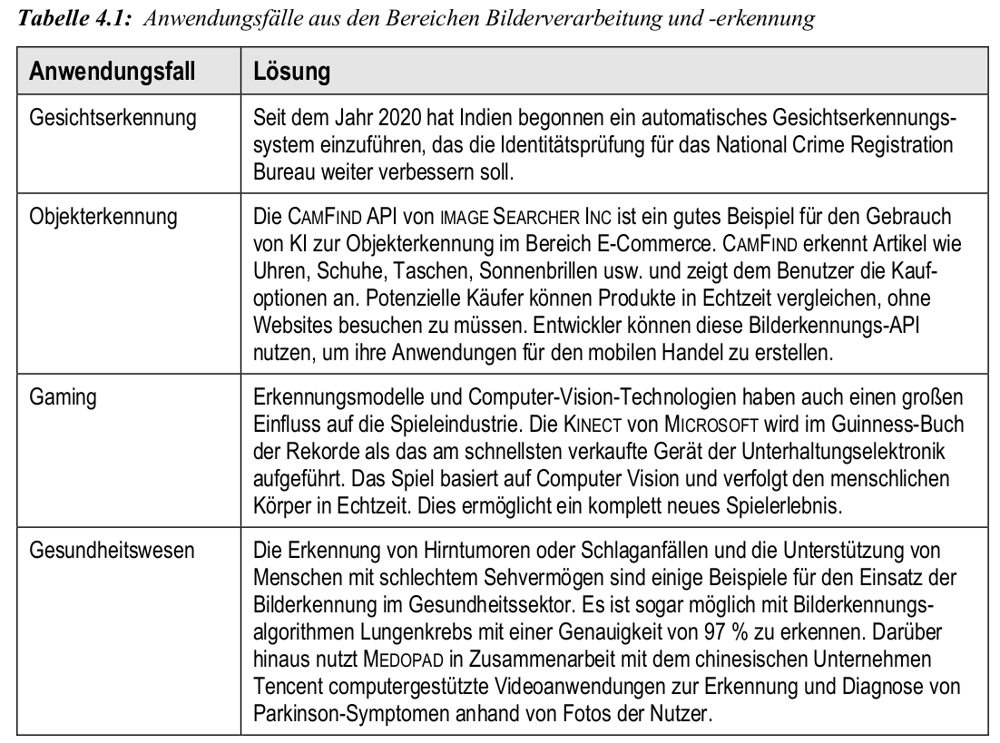
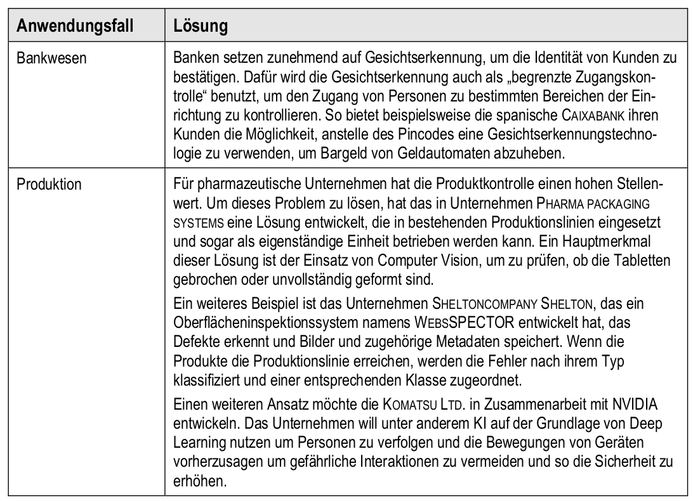
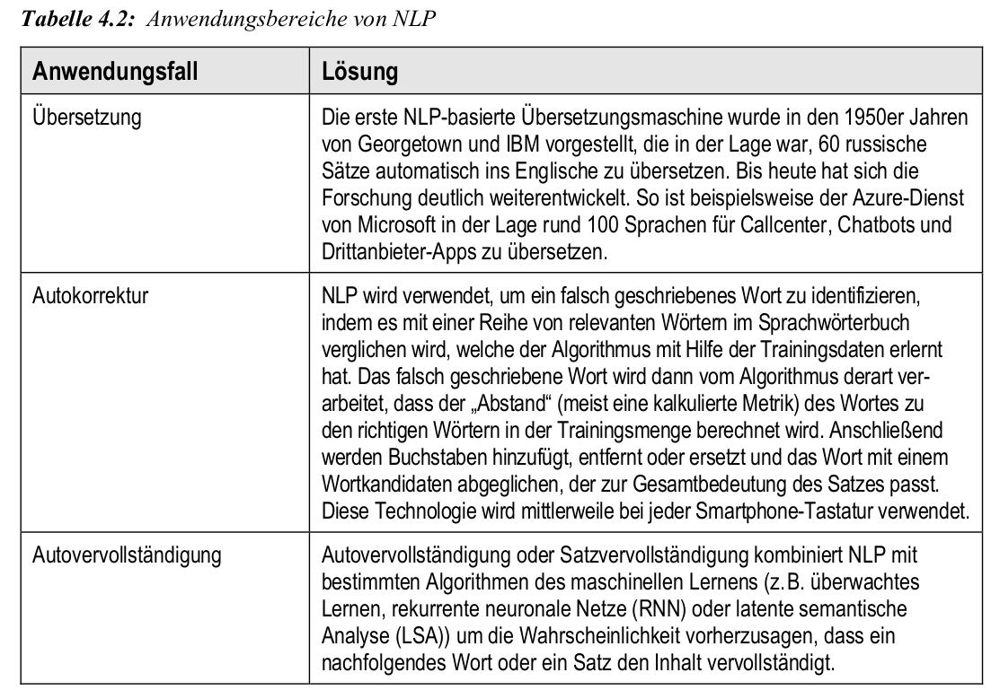
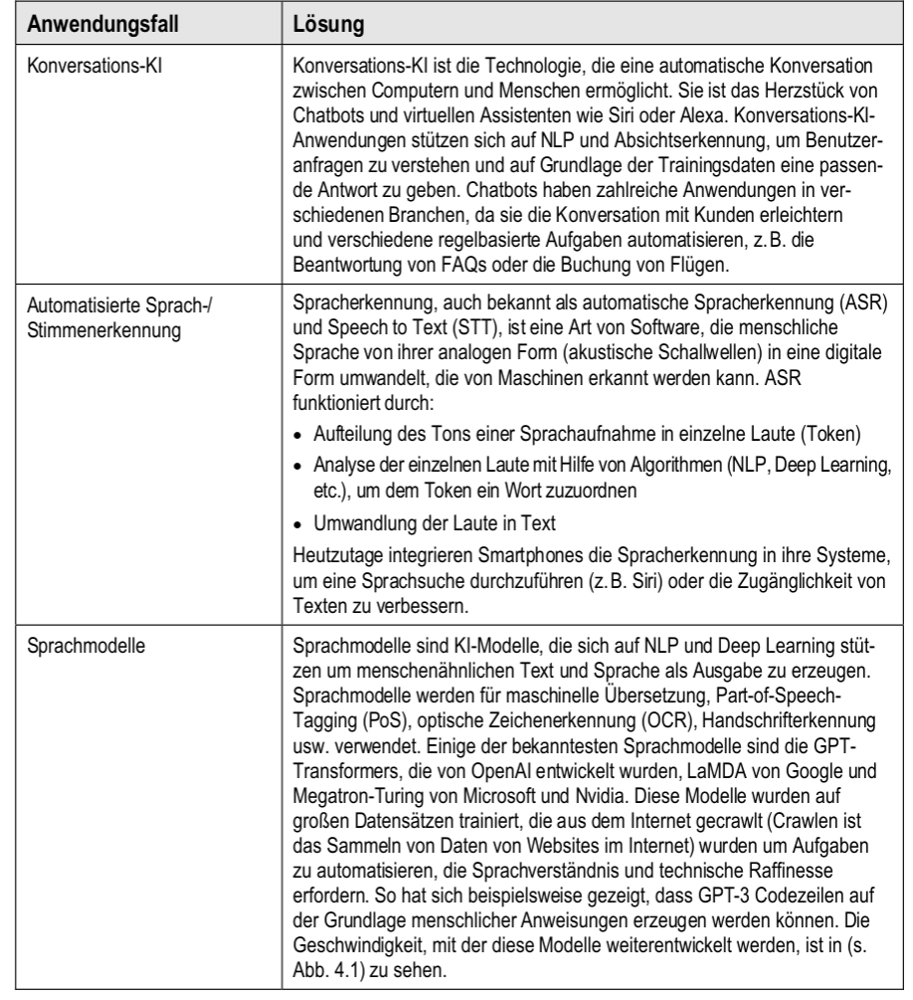
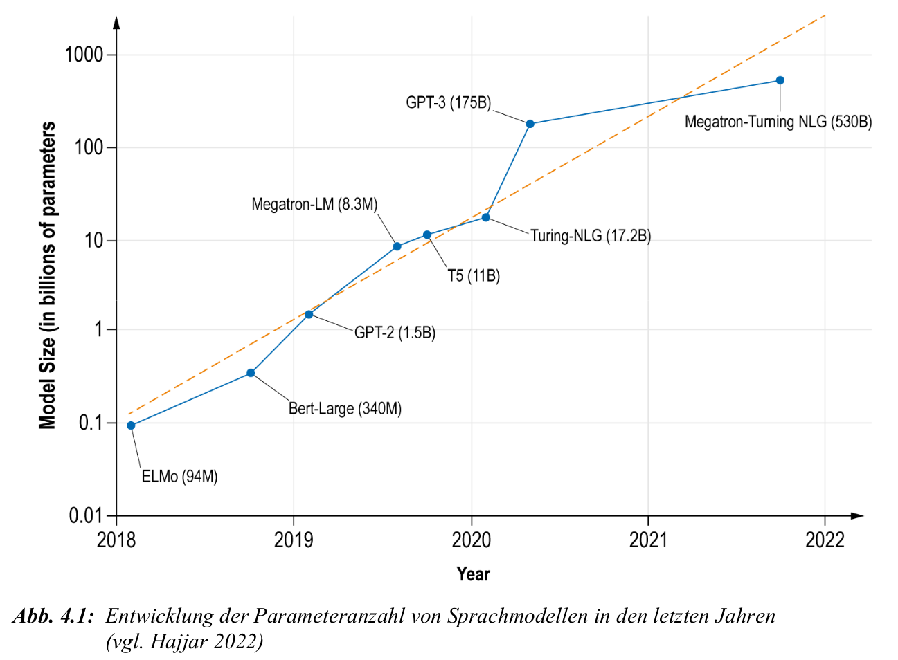
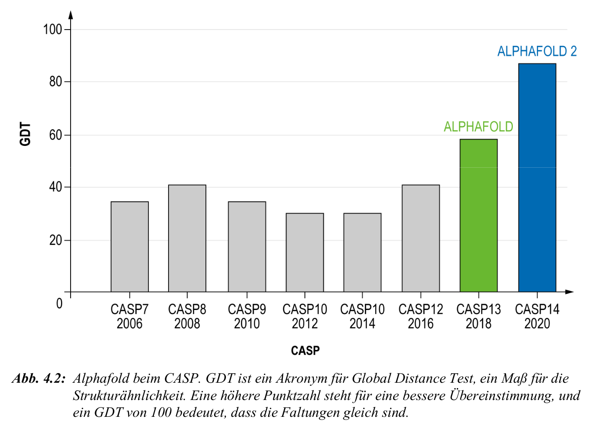

Anwendung: Computer Vision
Grundlagen und Abgrenzung
- Computer Vision (CV) ist ein Teilgebiet der KI zur automatisierten Auswertung visueller Informationen wie Bilder oder Videos
- Ziel: Interpretation visueller Daten auf einem Niveau, das menschlichem Sehen vergleichbar ist – für Klassifikation, Analyse, Steuerung
- zentrale Aufgabenbereiche:
- Bildklassifikation: z. B. Diagnoseverfahren, Qualitätssicherung
- Objekterkennung: z. B. autonome Systeme, Sicherheitstechnik
- Segmentierung und Rekonstruktion: z. B. in Medizin und Robotik
- wichtige Unterscheidungen:
- Bildverarbeitung: technische Modifikation von Bilddaten
- Bilderkennung: interpretative Einordnung – entscheidungsrelevant
- Deep Learning ermöglicht z. B. automatische Klassifikation & visuelle Synthese
Anwendung: Computer Vision
Andwendungsfälle aus Bildverarbeitung/-erkennung


Anwendung: Natural Language Processing (NLP)
Grundlagen und Anwendungsfelder
- NLP ermöglicht Maschinen das Verstehen, Interpretieren und Generieren menschlicher Sprache (Text & Audio)
- typische Aufgaben:
- maschinelle Übersetzung, Autokorrektur, Autovervollständigung
- Stimmungsanalyse, Spracherkennung, Chatbots
- Sprachverarbeitung = Kombination aus Linguistik, Statistik und KI
- moderne NLP-Systeme basieren auf Deep Learning, v. a. Transformer-Architekturen
- Sprachmodelle (z. B. GPT, LaMDA, Megatron) ermöglichen kontextsensitives Verstehen und Generieren ganzer Absätze
Anwendung: Natural Language Processing (NLP)
Anwendungsfelder

Anwendung: Natural Language Processing (NLP)
Anwendungsfelder

NLP: Entwicklung großer Sprachmodelle
Entwicklung Parameter Zahl der Modelle

NLP: Entwicklung großer Sprachmodelle
Neueste Entwicklungen (bis 2024)
- moderne Sprachmodelle basieren auf Transformer-Architekturen
- stetiger Anstieg der Parameteranzahl seit 2018 (GPT-2: 0,1 Mrd. \(\ra\) GPT-4: $$1 Bio. geschätzt)
- wichtige Meilensteine:
- GPT-3 (2020): 175 Mrd. Parameter
- GPT-4 (2023): multimodal, deutlich robuster, genaue Architektur nicht veröffentlicht
- GPT-4 Turbo (2023): kosteneffizientere Variante mit gleichem Verhalten
- Claude 2 (Anthropic), Gemini (Google), LLaMA 2 (Meta) als offene Alternativen
- Trends: multimodale Fähigkeiten, Tool-Integration (z. B. Code, Bilder, Audio), RLHF
- Herausforderungen: Bias, Halluzination, Energiebedarf, Erklärbarkeit
Anwendung: Biologie – AlphaFold
Proteinfaltung und Strukturvorhersage
- Proteine: Ketten aus Aminosäuren, deren 3D-Struktur ihre Funktion bestimmt
- Problem: experimentelle Strukturbestimmung ist teuer & langsam
- Ziel: Strukturvorhersage allein aus Sequenzinformationen
- AlphaFold (DeepMind):
- verwendet neuronale Netze mit Attention & evolutionären Features
- Vorhersage von Abständen & Winkeln zwischen Aminosäuren
- trainiert auf 100.000+ bekannte Proteinstrukturen (PDB)
- Validierung durch CASP14 (2020):
- GDT (Global Distance Test): Metrik zur Strukturähnlichkeit (0–100)
- AlphaFold erreichte GDT-Werte $$90 – nahe experimenteller Genauigkeit
AlphaFold: Ergebnisse im CASP14-Wettbewerb

Anwendung: Autonomes Fahren
KI in selbstfahrenden Fahrzeugen
- autonome Fahrzeuge (AVs) nutzen KI zur:
- Wahrnehmung der Umgebung (Kameras, Lidar, Radar)
- Lokalisierung & Kartierung (SLAM, GPS)
- Entscheidungsfindung (Routenplanung, Verhalten)
- Kontrolle (Lenkung, Beschleunigung, Bremsen)
- zentrale Rolle von Deep Learning bei:
- Objekterkennung, Segmentierung, Fußgängerprognose
- Szenenverständnis, Vorausschau, Gefahrenerkennung
- Vorreiter: Waymo, hervorgegangen aus dem Google-Auto-Projekt
- nutzt DNNs für Fußgängererkennung, Planung & Simulation
10 Mio reale Kilometer + >10 Mrd Simulationskilometer
- Herausforderungen:
- komplexe urbane Szenarien, rare edge cases, ethische Entscheidungen
- Rechenleistung (Edge), Latenz, Zertifizierung & Sicherheit